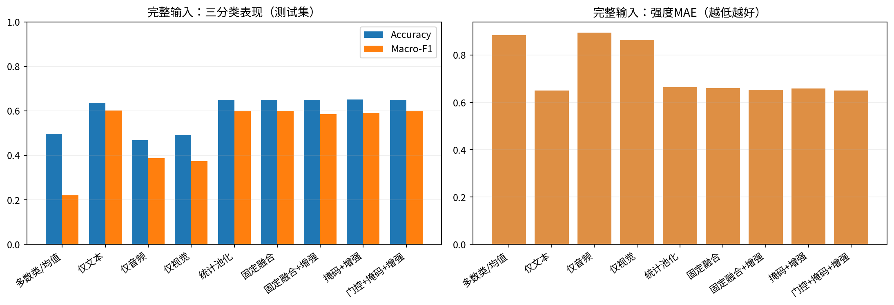
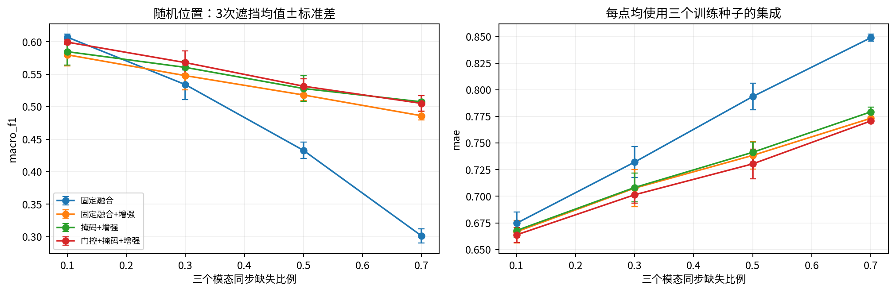
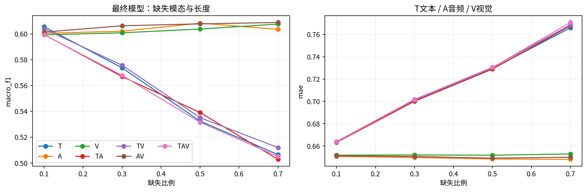
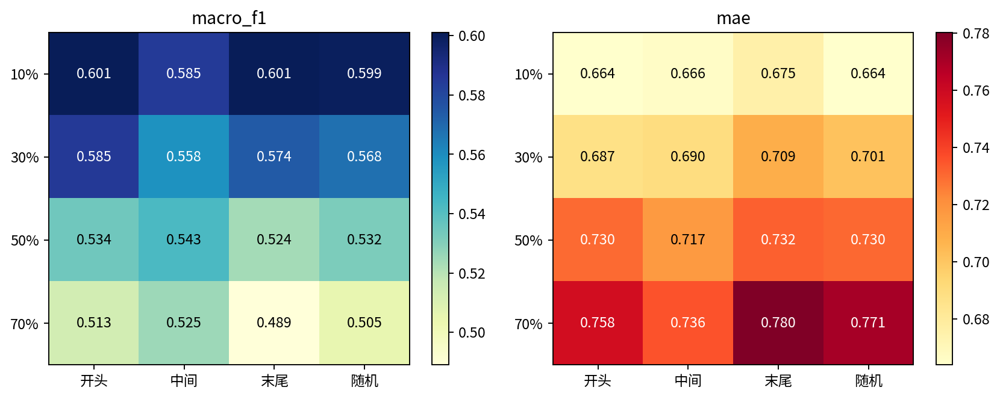
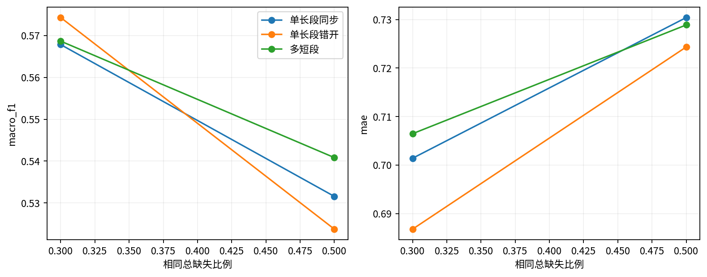
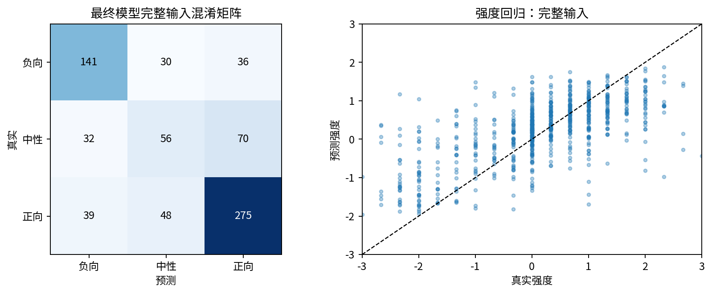
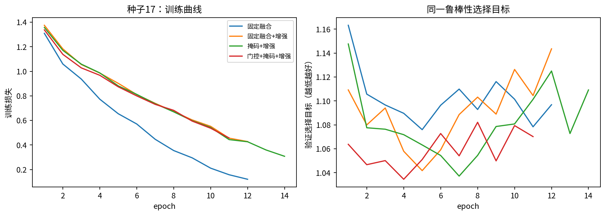
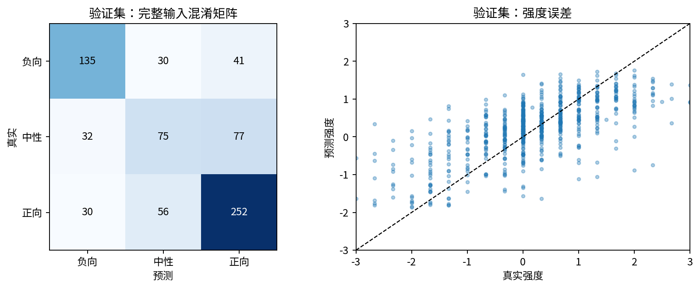

问题二 · 局部连续缺失实验
最终模型：门控+掩码+增强，三个训练种子集成。仅验证集选模型；测试集727条；专项30条。
完整输入 Accuracy0.649
完整输入 Macro-F10.599
完整输入 MAE0.651
TAV缺失50% Macro-F10.532
实验记录
完整实验报告 · 数学模型定义 · 代码与复现说明 · 全量指标 · 下载30条预测
缺失比例相对于有效词槽，不是秒；附件3无标签。融合权重不是因果解释；模型概率和种子分歧未经置信度校准。
| 模型 |
accuracy |
macro_f1 |
mae |
pearson |
neutral_recall |
| 多数类/均值 |
0.4979 |
0.2216 |
0.8856 |
NaN |
0.0000 |
| 仅文本 |
0.6369 |
0.6030 |
0.6500 |
0.6567 |
0.4367 |
| 仅音频 |
0.4677 |
0.3885 |
0.8954 |
0.2026 |
0.1582 |
| 仅视觉 |
0.4924 |
0.3750 |
0.8643 |
0.2539 |
0.0633 |
| 统计池化 |
0.6506 |
0.5978 |
0.6641 |
0.6329 |
0.3481 |
| 固定融合 |
0.6492 |
0.6007 |
0.6609 |
0.6582 |
0.3481 |
| 固定融合+增强 |
0.6506 |
0.5847 |
0.6537 |
0.6549 |
0.2722 |
| 掩码+增强 |
0.6520 |
0.5912 |
0.6585 |
0.6494 |
0.2911 |
| 门控+掩码+增强 |
0.6492 |
0.5989 |
0.6512 |
0.6546 |
0.3544 |

01_clean_comparison
02_ablation_missing_rate
03_modality_and_duration
04_position
05_shape_and_sync
06_errors
07_training
08_validation_errors本页由实际实验结果生成。本轮止于问题二。